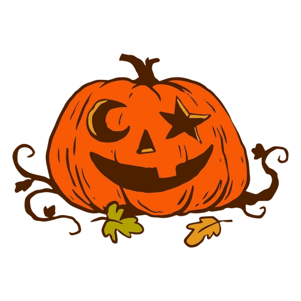
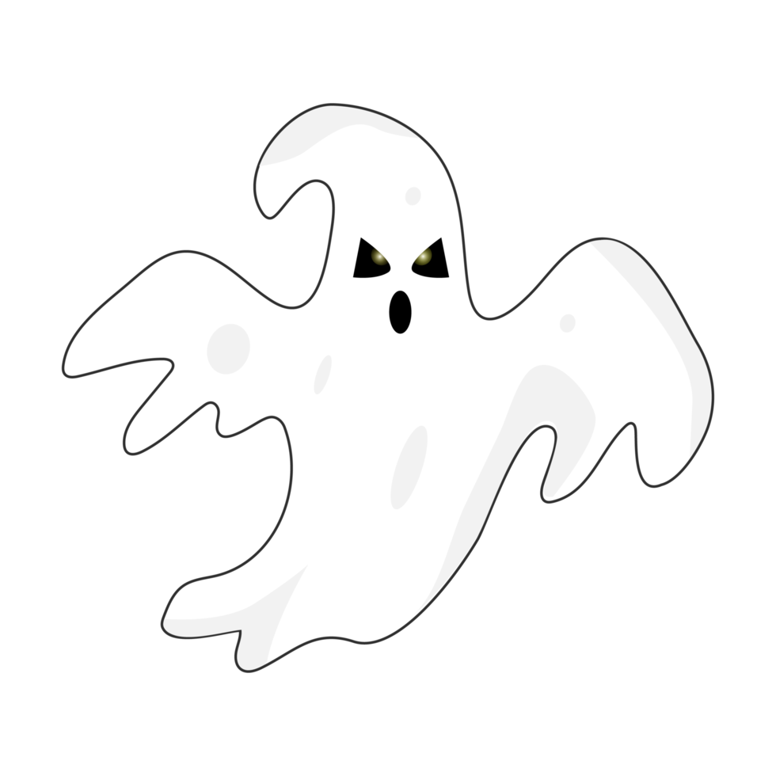
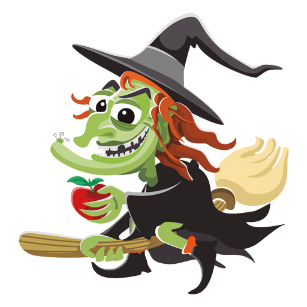

Símbolos do Halloween
Algumas dos personagens mais iconicos do Halloween

Jack-o-Lantern
A famosa abóbora esculpida com rostos assustadores, iluminada de dentro, é um dos maiores símbolos do Halloween. A lenda por trás do Jack-o'-Lantern vem de um conto irlandês sobre um homem astuto que enganou o diabo e foi condenado a vagar pela Terra com uma lanterna feita de nabo. Hoje, a abóbora esculpida é usada para espantar espíritos malignos e decorar casas.

Fantasma
Representando os espíritos dos mortos, o fantasma é um personagem clássico do Halloween. Sempre presente nas lendas e histórias de terror, ele simboliza o mistério da vida após a morte. Com lençóis brancos e formas flutuantes, os fantasmas são uma lembrança das superstições sobre a presença dos espíritos, especialmente na noite em que o véu entre os mundos é mais fino.

Bruxa
Um dos símbolos mais antigos do Halloween, as bruxas são retratadas como figuras misteriosas, muitas vezes associadas a feitiçaria, caldeirões e vassouras voadoras. A imagem da bruxa, com seu chapéu pontudo e risada sinistra, remonta a antigas crenças sobre magia e perseguições históricas, tornando-a um ícone assustador e fascinante da data.